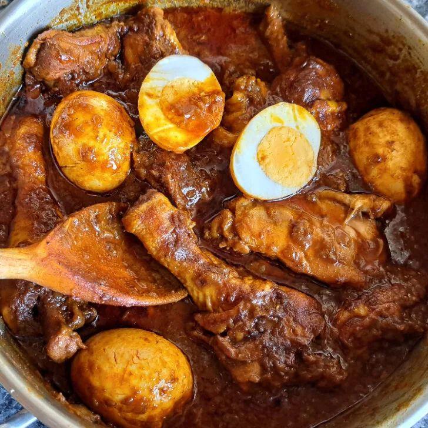

Doro Wot

Doro-wot:The Ethiopian cuisine
Doro-wot means “chicken stew”. To break it down further, Doro stands for chicken while wot means stew. This translation is gotten from Amharic, the language spoken in Ethiopia.
Ingredients
- 3 lbs chicken thighs cut into 1 inch pieces, or 3 chicken breasts, cut into 1/2 inch pieces
- 2 tbsp fresh lemon juice
- 2 tbsp niter kibbeh
- 2 tbsp extra virgin olive oil
- 3 cups yellow onions finely minced to a chunky puree in food processor
- 3 tpsp tablespoons butter
- 1 tbsp tablespoon finely minced garlic
- 1 tbsp tablespoon finely minced ginger
- ¼ cup Ethiopian berbere
- 1½ tsps salt
- 2 cup Tej Ethiopian honey wine, if you have it, or white wine mixed with 1 teaspoon ho
- 1 cup chicken stock
- 3 hard-boiled eggs pierced all over with fork about 1/4 inch deep
Steps:
- Place the chicken pieces in a bowl and pour lemon juice over.
- Let sit at room temperature for at least 30 minutes.
- Heat the niter kibbeh or butter along with the olive oil in a Dutch oven.
- Add the onions and sauté, covered, over low heat for 45 minutes, stirring occasionally.
- Add the garlic, ginger, and 1 tablespoon butter and continue to saute, covered, for another 20 minutes, stirring occasionally.
- Add the berbere and the 2 remaining tablespoons of butter and saute, covered, over low heat for another 30 minutes, stirring occasionally.
- Add the chicken, broth, salt and wine and bring to a boil.
- Reduce the heat to low, cover, and simmer for 45 minutes, stirring occasionally.
- Adjust the seasonings, adding more berbere according to heat preference.
- Add the boiled eggs and simmer on low heat, covered, for another 15 minutes.
- Half or quarter the eggs and arrange on the plates with the stew.
- Serve hot with injera, bread or rice.